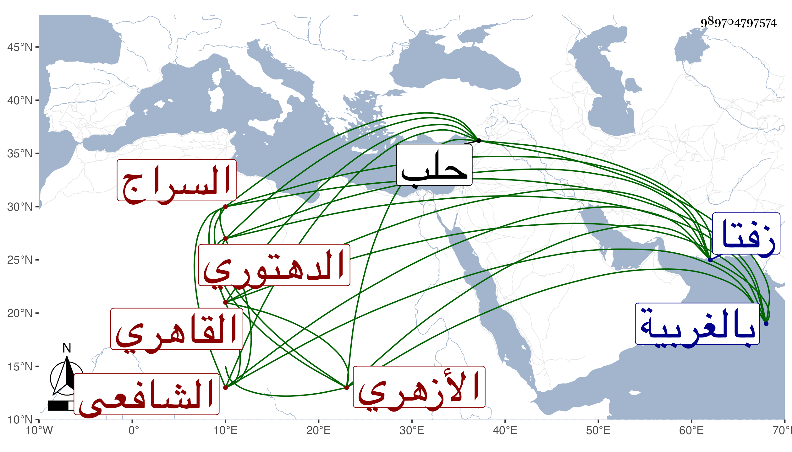

0902Sakhawi.DawLamic.ITO20230111-ara1.EIS1600.989704797574
Biography ID: 989704797574
420
عمر بن محمد السراج الدهتوري ثم القاهري الأزهري الشافعي ، ودهتورة بالغربية قريبا من زفتا . أحد الخيار من قدماء الأزهر ممن يصحح عليه الأبناء ألواحهم وربما أقرأ لكثرة دبكه وتوجهه للاستفتاء لما يعرض له من مشكل وغيره بحيث اجتمع عنده جملة من ذلك ، وهو ممن لازم المناوي بل أخذ عمن أقدم منه كالونائي والقاياتي مع جموده وتجرعه الفاقة حتى أنه أقرأ في مكتب الأيتام لخير بك من حديد بالقرب من مدرسته بزقاق حلب وكان يذهب إليه ماشيا فلما عجز صار يركب والغالب عليه الخير . مات في جمادى الثانية سنة سبع وتسعين بالطاعون عن بضع وسبعين ، وكان زوجا لابنة خاله الشيخ عمر الزفتاوي رحمهما الله وإيانا وصاهره ناصر الدين العجماوي على ابنته واستولدها .
